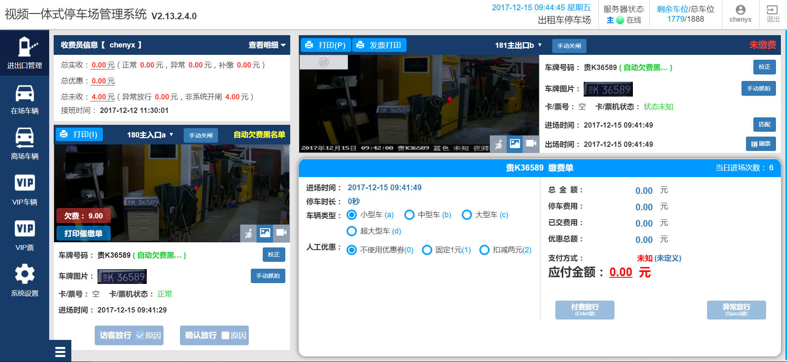

业务说明：
当前还不能实现一体机损坏时的自恢复功能，故采取在数据库损坏时在岗亭端页面进行提示，由收费员手动修复数据库的方案。
1、在岗亭端顶栏增加“数据库状态”显示，为数据库的实时状态。数据库状态正常时为绿灯显示，状态“正常”，无点击状态；
2、数据库损坏时为红灯显示，状态“异常”，点击后弹出气泡提示：当前数据库已损坏，继续使用可能存在数据不能上报后台、数据丢失等问题，建议您立即修复数据库。提供“修复数据库”入口按钮，用户点击“关闭”按钮关闭气泡提示。
3、用户点击“修复数据库”弹窗提示用户交接班后再进行修复数据库操作，用户确认操作后进行数据库的修复操作。
4、用户确认修复操作后将为用户自动退出系统，数据库修复完成后用户可重新登录系统，未完成时将不能登录系统。
5、损坏数据库需在1分钟内修复完成。



数据库状态
正常
数据库状态

异常

当前数据库已损坏，继续使用可能存在数据不能上报后台、数据丢失等问题，建议您立即修复数据库。
修复数据库
关闭
数据库状态
异常
修复数据库
修复数据库后将会自动重启一体机，
请在修复前进行交接班操作，防止数据丢失。
温馨提示:
1、交接班退出后可重新登录修复数据库；
2、修复数据库时将为您退出系统，您可在一分钟后重新登录系统。
确认修复
取消
数据库状态正常时
数据库损坏时